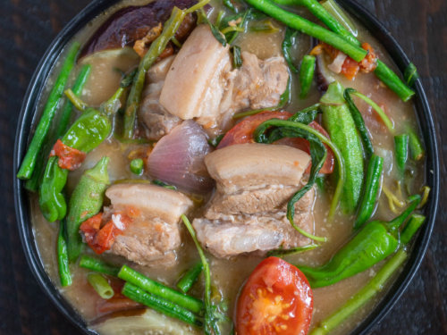

Pork Sinigang

About Pork Sinigang: A Description
Pork Sinigang is a dish native to the Philippines. It's main features of it's flavors are it's sour
yet savory hit on the tongue. It is also one of my favorite dishes, provided if its meat is tender.
This dish could be served any time of day or night, and can also consumed when one is sick.
Ingredients
- 2 pounds St. Louis-style pork ribs, separated and cut in half crosswise
- Kosher salt
- Freshly ground black pepper
- 3 ounces dried shiitake mushroom caps
- 1½ tablespoons whole black peppercorns
- 5 dried bay leaves
- 3 tablespoons canola oil
- 1 large white onion, thinly sliced (about 2 cups)
- 2 tablespoons minced garlic
- 3 large Roma tomatoes, cut into eighths (about 3 cups)
- 1 long pepper or jalapeño, stemmed and halved
- 7 ounces tamarind pulp
- 2 Thai eggplant, quartered or 1 Baby Italian eggplant, cut into 1-inch pieces
- ¼ pound small whole okra, stems trimmed without cutting into pod
- ¼ pound Chinese long beans or green beans, cut into 2-inch lengths
- 2 watermelon radishes or a 4-inch piece of daikon, sliced into ⅛-inch discs
- 3 tablespoons fish sauce
Steps
- Wash ribs and pat dry with paper towels. Season generously with salt and pepper. Set aside.
- Snap or pinch off any remaining stems of the dried shiitake mushroom caps and discard. Process mushroom caps to a fine powder in a food processor; you should have 1½ cups of mushroom powder. Set aside.
- Tie the peppercorns and bay leaves in a sachet made of loose cheesecloth and set aside.
- In a large Dutch oven or large heavy-bottomed pot over medium-high heat, add oil and sauté the onion, garlic, tomatoes and long pepper. After the onions have softened and the tomatoes have started to release their juices, reduce heat to medium and stir in the mushroom powder and 1 cup water. Cover and cook for 3 minutes.
- Add pork ribs to the pot and stir to combine with aromatics. Cover and cook for 3 minutes.
- Add 9 cups water and the sachet containing the peppercorns and bay leaves.
- Put tamarind pulp in a fine mesh sieve and submerge sieve in pot. Cover and bring to a boil. Once the pot has reached a boil, break up the tamarind pulp with a wooden spoon. It should have softened considerably. As you're breaking it up, take care to keep it contained in the sieve.
- Reduce heat to a low simmer and cook ribs for about 60 to 75 minutes, or until the meat is soft and pulls easily off the bone. Meanwhile, keep the pot covered, removing cover only to skim foam off the top, as necessary,
and to periodically stir the tamarind pulp in the sieve to help release its tartness. To increase the tartness of the broth even more, force pulp through the sieve with the back of a wooden spoon. Once broth has reached the desired level of tartness, remove the sieve from the pot and discard the tamarind solids.
(Depending on the taste of the cook, the tamarind pulp may be removed well before the ribs are tender.) Season broth with salt to taste.
- Add eggplant and okra; cover and cook for 5 minutes. Add long beans and radishes; cover and simmer for 3 more minutes. Check the seasoning of the broth and adjust, if necessary.
- Turn off heat and discard the sachet. Ladle into bowls, and serve immediately with steamed jasmine rice. Put fish sauce in a small bowl on the table for people to add to their soup, as desired.